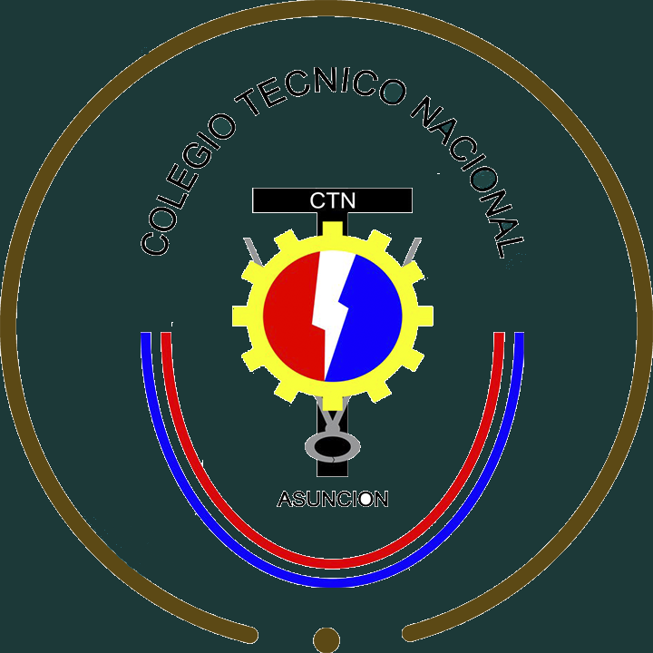

Vea También |
||
![]()
| 13 características del comunismo | |
![]()
| ¿Qué es el comunismo? |
El Marxismo |
|
El principal argumento en el que se basa el marxismo es que el capitalismo es un sistema económico cuya estructura es errónea. Y, por tanto, debe ser reemplazada por otra que abolirá el sistema de propiedad burguesa y el libre mercado de bienes y servicios. Ver comunismo De acuerdo con Marx, el problema clave del capitalismo es que genera la explotación de los trabajadores. De ahí que Marx para fundamentar su teoría se apoye, entre otras cosas, en su conocida tasa de plusvalía. Origen del marxismoEl origen del marxismo se sitúa a mediados del siglo XIX. Sin embargo, gana relevancia a finales del XIX. Fecha en la que Karl Marx expandió y popularizó sus ideas a través de sus obras. Entre ellas, se sitúa en un lugar muy relevante la obra de El Capital (1867). Los defectos del capitalismo según el marxismoAsí, para el marxismo, dos defectos ocasionan tal sistema de desigualdad sobre los más débiles:
Esta capacidad de la burguesía para manipular a los trabajadores, les permite devaluar la mano de obra, creando así ganancias para sí misma. Es más, los marxistas ven al capitalismo como el creador de un círculo vicioso que ocasiona que los trabajadores sean explotados cada vez más.
Además, el marxismo defiende que las economías capitalistas se retroalimentan de las crisis económicas. Karl Marx creía que esta dependencia de las depresiones económicas podría causar estragos a largo plazo. Y, por lo tanto, abogaba para que una comunidad planificada reemplazara tal sistema. Principales características del marxismoEntre las principales características del marxismo y que explican en qué consiste, podemos destacar las siguientes:
En resumen, el marxismo consiste en la construcción de una nueva sociedad ideal en la que no exista desigualdad. Ideas principales del marxismoLa teoría de la economía marxista mantiene que el capitalismo eventualmente se autodestruirá, a medida que explota a más y más trabajadores. De esta manera, el proletariado —el conjunto de la mano de obra— actúa como un catalizador para la caída del capitalismo y surgimiento del nuevo sistema socialista. Es lo que se conoce como dialéctica. En otras palabras, el concepto de la dialéctica ilustra que la caída del capitalismo y el subsiguiente surgimiento del socialismo, y consiguientemente del comunismo, son inevitables. La burguesía (tesis) y el proletariado (antítesis) chocan para crear el socialismo (síntesis), que garantiza el advenimiento del comunismo. Sin embargo, la dialéctica, de ser continuada, también concluye que el comunismo no puede ser la síntesis final ya que siempre sucederá un nuevo surgimiento. En resumen, los marxistas afirman que el comunismo —como supuesto estado dialéctico final— proporciona más libertad que otros sistemas económicos y que la redistribución de la riqueza resolverá muchos problemas. Es más, Marx propone el empleo de las instituciones del Estado, como por ejemplo, el uso de los impuestos para financiar la compra y distribución de los medios de producción a los trabajadores que, al paso del tiempo, formará un mercado de competencia perfecta. Además a nivel religioso, el marxismo originario se postula en contra. Según Karl Marx, la religión es el opio del pueblo. En este sentido, afirma Marx, la salvación de la humanidad está en la tierra no en el cielo. |
|  | Alumnos: Juan Benegas y Victor Yubero |
Proyecto: “Sitio Web Educativo” |